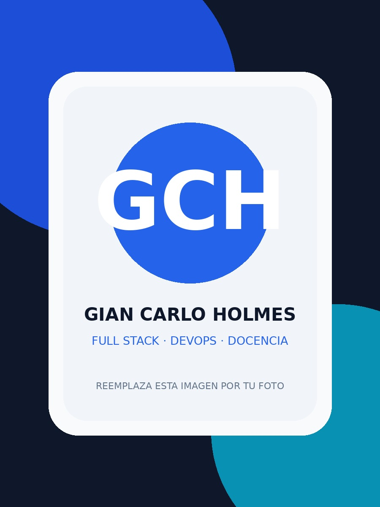

Full Stack
Backend, frontend, APIs REST y bases de datos.
Hola, soy
Profesional en Informática Educativa con experiencia en desarrollo web Full Stack, docencia técnica, soporte tecnológico y administración de infraestructura Linux. Trabajo con tecnologías modernas para construir, desplegar y mantener soluciones digitales orientadas a entornos educativos y empresariales.

Desarrollo software, enseño tecnología y administro infraestructura para convertir necesidades reales en soluciones digitales funcionales.
Profesional en Informática Educativa con experiencia en desarrollo web Full Stack, docencia técnica, soporte tecnológico y administración de infraestructura Linux.
Especializado en PHP, Laravel, Angular, React, MySQL y MongoDB, además del despliegue de aplicaciones modernas mediante Docker, VPS Linux y plataformas DevOps.
También cuento con experiencia en automatización, integración de tecnologías cloud, SEO y desarrollo de soluciones digitales para entornos educativos y empresariales.
Backend, frontend, APIs REST y bases de datos.
Ubuntu Server, Debian y administración de servidores.
Docker, GitHub Actions, Dokploy y Easypanel.
Programación, software, bases de datos y herramientas digitales.
Herramientas y tecnologías que forman parte de mi experiencia profesional.
Experiencia en desarrollo de software, educación tecnológica, soporte técnico, datos y operaciones.
Una combinación de desarrollo, infraestructura, datos y educación tecnológica.
Desarrollo y soporte de aplicaciones web con Laravel, interfaces modernas y consumo o construcción de APIs REST.
Despliegue y mantenimiento de aplicaciones mediante Docker, VPS Linux, GitHub Actions, Dokploy y Easypanel.
Capacitación en programación, software, bases de datos, herramientas digitales y soporte técnico.
Creación de dashboards y reportes mediante Power BI, junto con Excel avanzado y análisis técnico.
Formación universitaria, conocimientos técnicos y aprendizaje continuo.
Universidad Pedagógica Nacional Francisco Morazán
Universidad Pedagógica Nacional Francisco Morazán
Disponible para conversar sobre oportunidades profesionales, desarrollo de software, soporte, infraestructura o educación tecnológica.
Desarrollo soluciones web, apoyo despliegues en Linux, automatizo procesos y comparto conocimiento técnico en entornos educativos y empresariales.